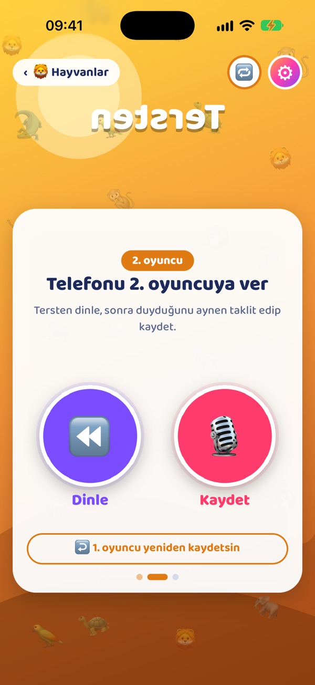

Bize e-posta gönder, genellikle iki iş günü içinde dönüyoruz. Lütfen iPhone ya da iPad modelini ve iOS sürümünü de yaz.
E-posta gönder
Nasıl oynanır
- Ana sayfada bir konsept seç, örneğin Futbolcular ya da Yılbaşı.
- 1. oyuncu gizli bir kelime kaydeder. Fikir için 🎲 Kelime öner'e bas; 2. oyuncu görmeden okumak için 👀 Görmek için basılı tut'a basılı tut. Diğer konseptinde kelimeni kendin yazabilirsin.
- 1. oyuncu büyük mikrofon butonuna basar, kelimeyi söyler ve durdurmak için aynı butona tekrar basar.
- Cihazı 2. oyuncuya ver. 2. oyuncu Dinle'ye basar ve kelimeyi tersten dinler; istediği kadar tekrar dinleyebilir.
- 2. oyuncu Kaydet'e basar, duyduğu ters sesi olabildiğince aynen taklit eder ve Durdur'a basar.
- Uygulama taklidi düze çevirir ve hemen çalar; gerçek kelimeye benzemesi gerekir. Tahminini söyle! Taklidimi dinle tekrar çalar, Tekrar dene ile 2. oyuncu bir daha dener.
- 1. oyuncunun orijinal kaydını dinlemek ve kelimeyi görmek için Cevabı göster'e bas.
- Bir tur daha oynamak için 🔁 Yeni oyun'a bas.

Sık sorulan sorular
Uygulama mikrofon izni istiyor
Tersten sesini kaydetmek için mikrofona ihtiyaç duyar. "İzin Verme"ye bastıysan iPhone ya da iPad'inde Ayarlar uygulamasını aç, aşağı kaydırıp Tersten'e gir ve Mikrofon'u aç.
Turuncu mikrofon noktası neden Kaydet'e basmadan yanıyor?
Kayıt, dokunduğun anda başlayabilsin diye uygulama, ekranda bir Kaydet butonu varken mikrofonu hazır tutar. Basmadan önceki hiçbir ses tutulmaz: o saniyenin küçük bir kısmı kayıttan kesilir, kayıt yapmadan ekrandan çıkarsan silinir.
"Çok kısa oldu" diyor
Kayıtların en az çeyrek saniye olması gerekir. Kayıt butonuna bas, kelimeyi net söyle ve konuşman bitince aynı butona tekrar bas.
Hiç ses duymuyorum
iPhone ya da iPad'inin ses tuşlarıyla sesi aç. Oyun, sessiz modu açıkken de ses çalar. Bluetooth kulaklık kullanıyorsan bağlı olduğunu kontrol et.
Dili nasıl değiştiririm?
Sağ üst köşedeki renkli ⚙ butonuna bas ve Türkçe ya da English'i seç. Kelime önerileri de seçtiğin dile geçer.
Buton seslerini nasıl kapatırım?
⚙ Ayarlar'ı aç ve Uygulama sesleri'ni kapat. Kayıtların yine normal çalar.
Neden reklam var?
Reklamlar oyunun ücretsiz kalmasını sağlıyor. Oyun ekranının altında küçük bir banner var. Her iki tamamlanan turdan sonra da, bir sonraki tura geçerken tam ekran bir reklam çıkıyor.
Kayıtlarım saklanıyor ya da paylaşılıyor mu?
Hayır. Kayıtlar cihazında kalır, sadece o tur için kullanılır ve yeni oyuna başladığında ya da oyun ekranından çıktığında silinir. Ayrıntılar Gizlilik Politikası'nda.
iPad'de çalışıyor mu?
Evet. 1.1 sürümünden itibaren Tersten'in iPad'e özel, dikeyde ve yatayda daha büyük bir yerleşimi var.
Android sürümü var mı?
Henüz yok. Tersten şu an iPhone ve iPad için.